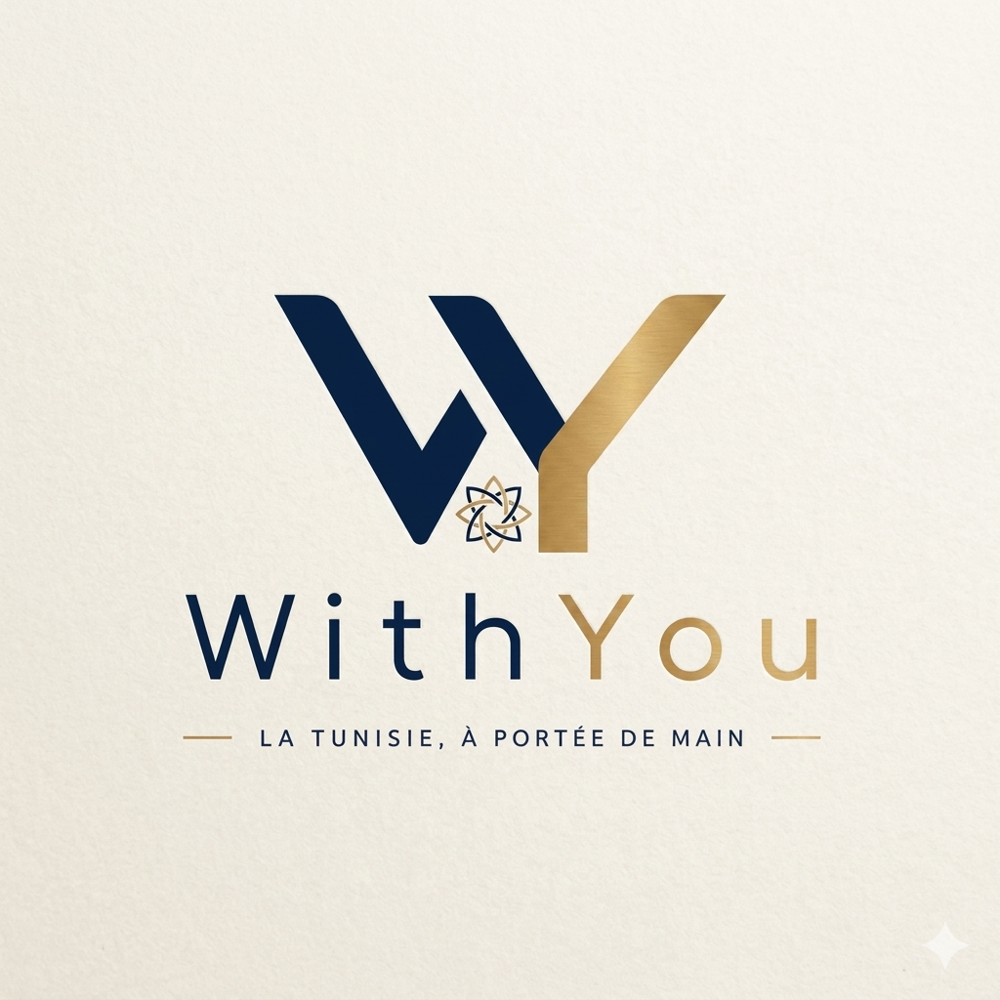

Découvrez les trésors cachés de la Tunisie à travers ses villes emblématiques. Hôtels de charme, restaurants authentiques, sites millénaires et expériences uniques.
Explorer les destinationsDes riads authentiques aux palaces contemporains, trouvez l'hébergement parfait.
Restaurants traditionnels et bars tendance pour savourer la cuisine tunisienne.
Musées renommés et sites classés au patrimoine mondial de l'UNESCO.
Coordonnées GPS exactes et cartes interactives pour chaque lieu.
De la Méditerranée au Sahara, explorez la richesse culturelle et naturelle de la Tunisie.
Toutes nos recommandations géolocalisées en temps réel.